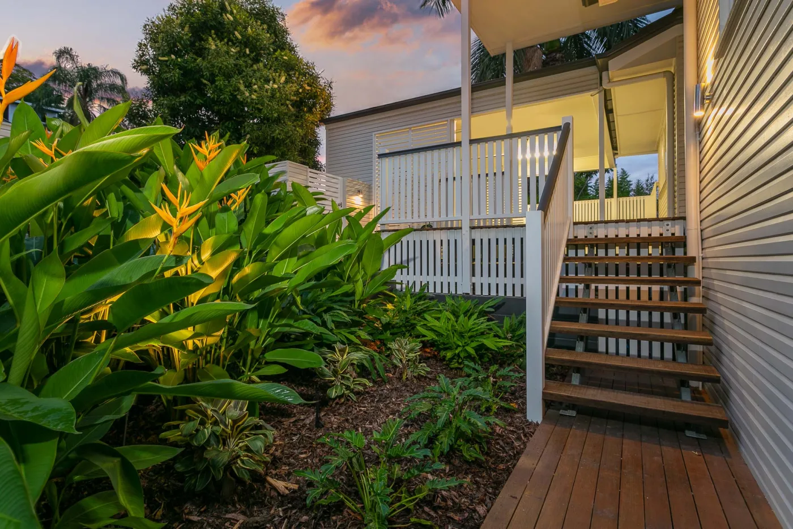
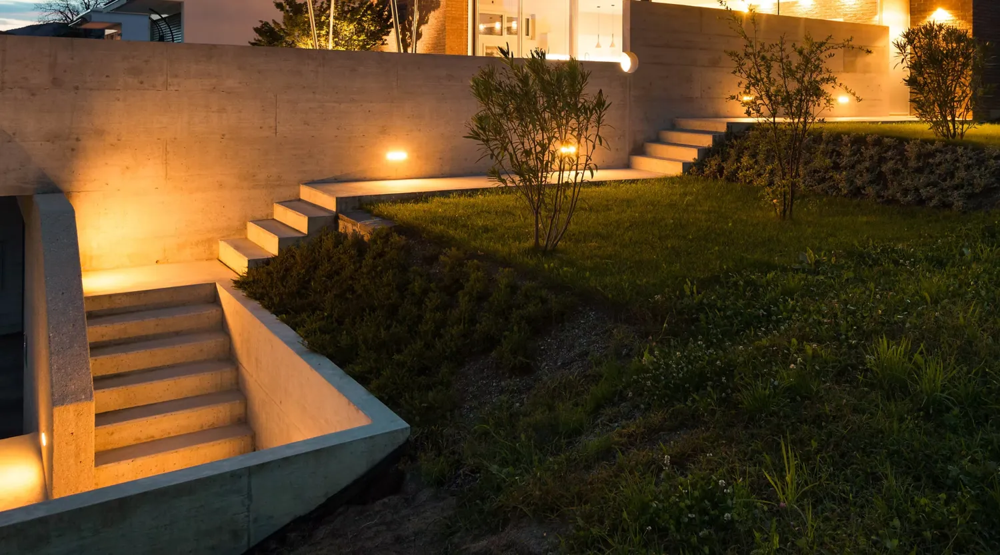

Outdoor living
Built to be lived in, day and night.
A pool is the centrepiece, but it's the space around it that makes a backyard. We design and build the whole thing so it works as one, and it's finished when we hand it over.

Outdoor living
Outdoor kitchens, bars, pizza ovens, fire pits, water features and all-weather entertaining areas.

Decks & carpentry
Decks, pergolas, screens and feature timber, built to sit seamlessly with the pool and house.

Gardens & lighting
Soft and hard landscaping, turf, smart irrigation and feature lighting to bring it alive after dark.